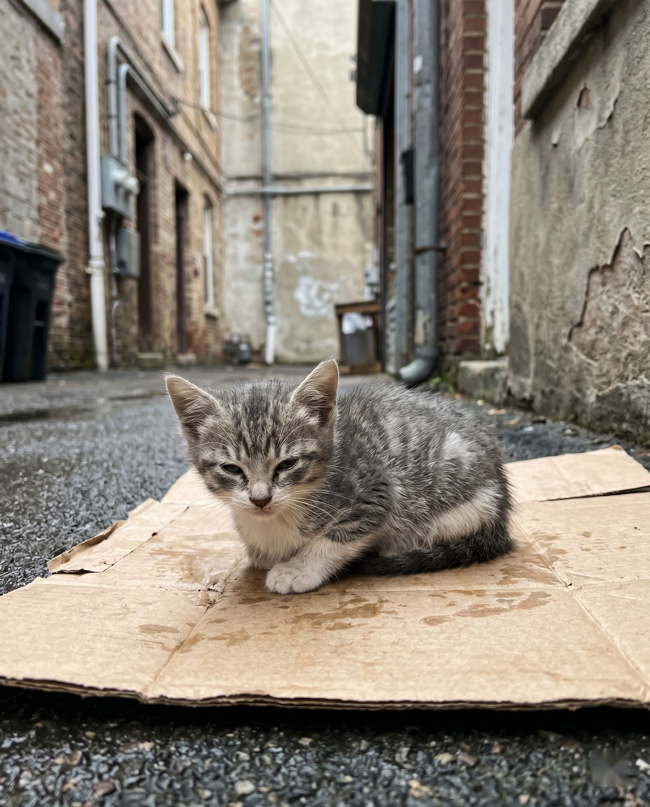
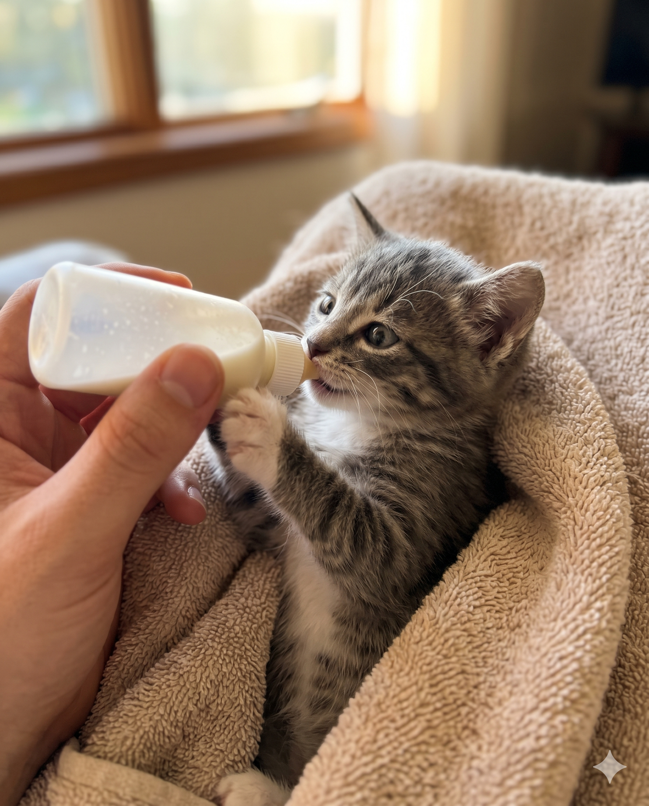
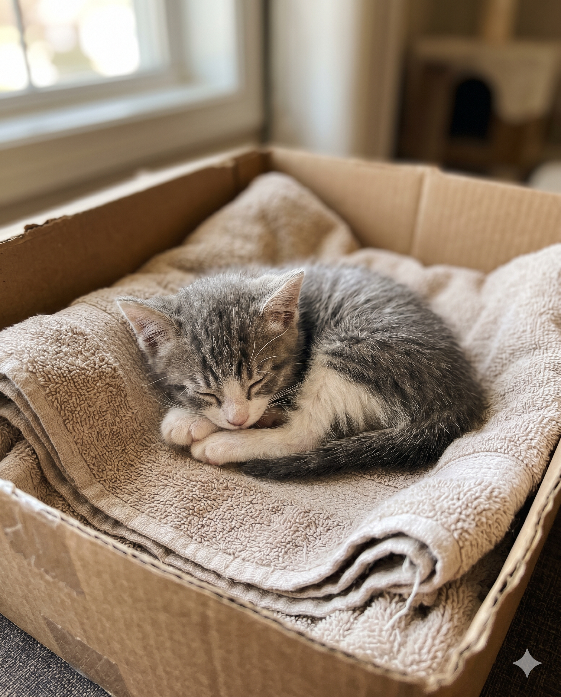

小区里救了一只小奶猫 求大佬支招😭
清晨五点被叫醒 真的麻了
阳台外面一直听见小奶猫叫 我跑下楼一看
树丛里一只刚满月的小奶猫 浑身湿透 流着鼻涕 眼睛都睁不开
那叫一个心碎 浪猫的妈妈不知道去哪了 我等了一晚上没回来
小奶猫真的太脆了 我手忙脚乱 奶都不会冲
互联网姐妹救命 求大佬支招 怎么照顾小奶猫
助养也行 我家哈基米估计要嫉妒疯了😭
有靠谱的猫医院推荐吗 蹲一个
📍 朝阳区



清晨五点被叫醒 真的麻了
阳台外面一直听见小奶猫叫 我跑下楼一看
树丛里一只刚满月的小奶猫 浑身湿透 流着鼻涕 眼睛都睁不开
那叫一个心碎 浪猫的妈妈不知道去哪了 我等了一晚上没回来
小奶猫真的太脆了 我手忙脚乱 奶都不会冲
互联网姐妹救命 求大佬支招 怎么照顾小奶猫
助养也行 我家哈基米估计要嫉妒疯了😭
有靠谱的猫医院推荐吗 蹲一个
共 198 条评论